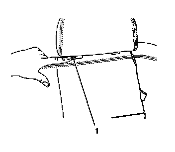
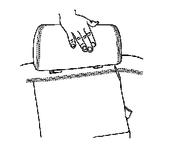

Rear Seat Number 2 Head Restraint Replacement
Rear Seat Number 2 Head Restraint Replacement
Removal Procedure

1. Push in on the release tab located on the head restraint retainer (1) to remove the head restraint.
2. Remove the head restraint from the seat back.
Installation Procedure

1. Align the rear seat head restraint to the head restraint retainers.
2. Push the heads restraint down until the head restraint is fully seated against the rear seat back.